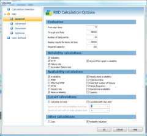
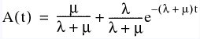

Question
 When calculating RBDs (Reliability Block Diagrams) in Windchill RBD, four different availability values can be computed: Availability, Mean Availability, Steady-State Availability, and Operational Availability. What are the differences between these different values and when should I select one over the other?
The Answer
Availability is one of the most important reliability measures of repairable systems because it takes into account both failure and repair information. Availability is defined as the probability that an item (system, subsystem, or component) is available for operation at a specified time given that is used under stated conditions in an ideal support environment. For simplification, the stated conditions are generally omitted from the definition.
If a system operates when in a good condition, availability can be defined as the probability that the system is in operation at a specified time. Availability can also be defined as:
A(t) = Availability = Probability {system is in good condition}
The availability at time t is the expected number of times the system is in good condition at time t. While the terms ability, capability, and degree are sometimes used in place of the term probability, these other terms are generally measured using probability. Thus, it is best to define availability in terms of probability.
Similarly, the terms at any time, at an unknown time, or at a random time are sometimes used in place of the term at a specified time. For non-repairable (non-maintainable) systems, these terms are rarely useful and often confusing. For non-repairable systems, it is best to use at a specified time in the definition of availability.
For repairable (maintainable) systems, which consist of components that can be repaired or replaced, the estimate of system availability can become constant with respect to time as time progresses. This condition is known as the steady-state condition. Under such conditions, time need not be explicitly specified for availability to be calculated. Thus, using the terms at any time, at an unknown time, or at a random time in the definition for availability is valid for steady-state conditions.
Availability
The availability of the system depends on its initial condition and both the failure and repair distributions specified for modeling its failure and repair processes. It is a common practice to assume that the system is initially in good condition and that the system is as good as new (meaning that the effective age of the system is zero). For a single-unit system with exponential failure and repair distributions having λ and μ as its respective rates, availability is:

Because this availability value is a function of time t, it is called time-specific availability or time-dependent availability. In stochastic process terminology, it is called transient availability. On occasion, it is also called instantaneous availability or point availability because it is evaluated at a particular instance or point in time. In Windchill RBD, selecting the Availability option causes time-specific availability to be calculated. Knowing the system availability at specified points in time is especially helpful and important for systems with shorter durations.
Mean Availability
Mean availability is the expected percentage of uptime within a time interval. It is also called average availability or interval availability. The cost of system downtime is directly related to its mean availability. For systems with calendar time-based periodic maintenance policies, availability may be zero at regular periodic intervals. In such cases, mean availability is a more meaningful measure than availability.
Steady-State Availability
Steady-state availability is calculated when time tends to infinity where the change in A(t) with respect to time becomes negligible (converges to zero). Because the availability result converges to an asymptotic value, steady-state availability is sometimes called asymptotic availability. Since an asymptotic condition occurs only when t is large (theoretically infinity), steady-state availability is also called long-run availability. Steady-state availability is the mean uptime (MUT) divided by the sum of the mean uptime (MUT) and mean downtime (MDT):
A(∞)= μ / (λ + μ) = MUT / (MUT + MDT)
Although a system theoretically reaches a steady state only at infinite time, it has been proven that the actual change in availability is negligible after reaching a certain time. Because most systems are designed for longer durations, the lengths of which are not precisely known upon initial start-ups, the estimate of availability reaches a steady-state value within a reasonable time. Thus, steady-state availability results are critical to analyzing the long-run behavior of the system.
An advantage of steady-state results is that they can be computed quickly and accurately. Under steady-state conditions, mean availability is equivalent to availability. Therefore, steady-state availability can also be used for steady-state mean availability.
Operational Availability
Corrective repair of a component or system may not start immediately due to logistics and administrative delays. Such delays are generally grouped and classified as logistic delay times. In such cases, the mean downtime is the sum of the mean corrective/repair time (MCT) and the mean logistic delay time (MLDT). The availability value that considers the effects of logistic delay times is known as operational availability. The equation generally provided in reliability textbooks is for steady-state operational availability. This equation is:
Ao = MUT/ (MUT + MCT + MLDT)
However, logistic delay times are also applicable for shorter durations. This is why Windchill RBD allows you to choose between calculating time-specific operational availability and steady-state operational availability. Whenever you select the option for calculating operational availability, Relex calculates time-specific operational availability. Because Windchill RBD will also then consider logistic delay times in the calculation of the steady-state availability, the resulting value for it is the steady-state operational availability. Similarly, the resulting value for the mean availability is the mean operational availability.
If operational availability is the "real" availability of the system, why calculate an availability value that does not consider logistic delay times? Logistic delay times for a specific component may depend on the location where it is used, the type of logistic facilities available, and the effectiveness of the maintenance management. Because logistic delays can be minimized or eliminated, the difference between availability and the operational availability is a measure of loss in availability due to logistic delays. Therefore, an availability value that does not consider these delays is the inherent property of the system. This is why such an availability value is also known as inherent availability or intrinsic availability.
Windchill RBD
Windchill RBD is a complete, fully featured graphical reliability block diagram evaluator. The intuitive user interfaceenables you to draw a visual layout of your system on the screen. After entering your system parameters, Windchill RBD's sophisticated and powerful Monte Carlo calculation engine does the rest - providing fast, accurate reliability and maintainability (R&M) results. In addition to calculating the availability calculations described above, Windchill RBD calculates reliability, MTBF, failure rate, expected number of failures, mean unavailability, total downtime, frequency, hazard rate, and many other system metrics. Windchill RBD also can determine your system cut sets or path sets. To find out more about Windchill RBD and the many features that it provides, please visit www.crimsonquality.com/products/rbd.